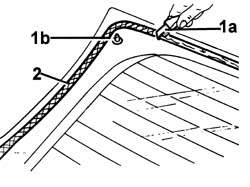

7035B26 REAR WINDOW GLASS CLEAN ENGES AND SAND SMALL ABRASIONS
- Path
- Procedures > 70 FITTINGS > 7035 BODYSHELL WINDOWS > 7035B REAR WINDOW > 7035B26 REAR WINDOW GLASS CLEAN ENGES AND SAND SMALL ABRASIONS
- Kind
- repair procedure (removal / refitting; the operation number is the code)
- Applies to
- all engines; all production periods
- Interactive page
- https://sloeber94.github.io/elrnDB-fUlss/en/#/179007774
Applies to: all engines; all production periods
1. Using suitable equipment (1a) cut and level the bead of sealant (1b) on the rearscreen so that it is as thin as possible.
2. Clean the perimeter of the serigraphed area of the windscreen thoroughly with compressed air and degrease it using heptane.
- When bonding, 60 minutes after the bead of sealant has been cut and levelled, the surface of the actual sealant must be treated using the special activating product and it is necessary to wait for 15 minutes before fitting the rearscreen.
 | Description | Qty. | Component | Type | Classification |
|---|---|---|---|---|---|
. | PRIMER | - | WINDSCREEN GLASS SEALING STRIP | Sealant |
